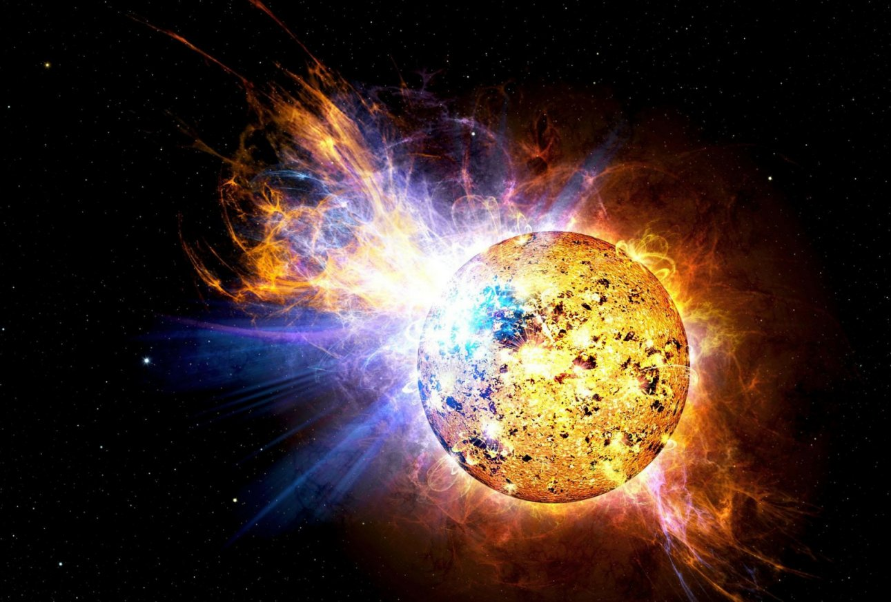
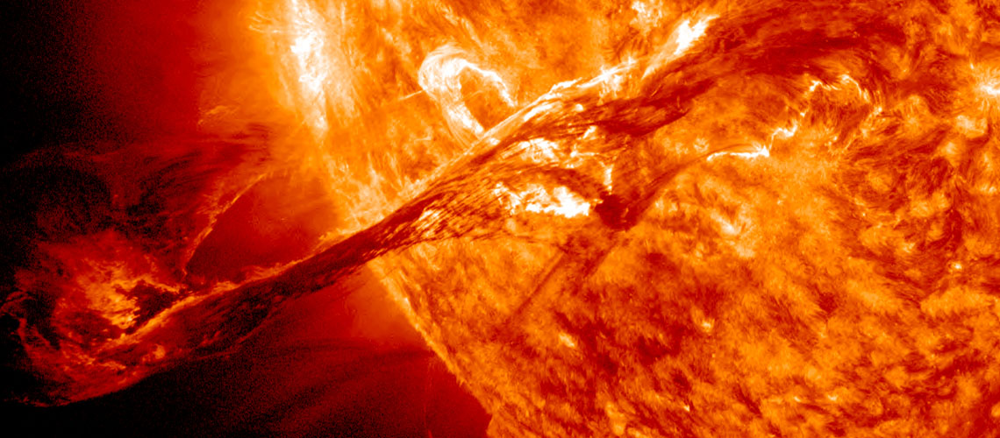

Il Sole è l’unica Stella ben visibile ai nostri occhi. Ci appare come una sfera gialla e, senza renderci conto, ha una notevole influenza sulla nostra vita quotidiana. È infatti indubbio che una giornata soleggiata, con un bel Sole e un clima mite, ci faccia venire voglia di fare una passeggiata all’aria aperta o al mare e ci metta di buonumore.Il Sole dista da noi circa 149,6 milioni di km, ha un diametro pari a 110 diametri terrestri ed un volume superiore a più di un milione di volumi terrestri. A causa della densità media solare nettamente inferiore a quella della Terra (circa 5,5 g/cm3), si è potuto ipotizzare la presenza di elementi leggeri come idrogeno (94%) ed elio (5,9%).
L’energia solare è l’energia madre sulla Terra. È grazie alla radiazione solare, ad esempio, che le piante completano la fotosintesi clorofilliana e innescano il processo virtuoso che consente la sopravvivenza delle creature che abitano il pianeta. L’irraggiamento solare è anche l’origine dei venti, delle maree e dei combustibili fossili: il Sole è il motore primo di quasi tutte le forme di energia sul nostro Pianeta. Per secoli gli esseri umani hanno sfruttato a proprio vantaggio lo stretto legame che esiste tra vegetali e sole, soprattutto per imparare a gestire il ciclo di vita delle piante necessarie alla propria nutrizione. Con l’avvento del progresso tecnologico, alla fine del XIX secolo, è stato possibile trasformare la potenza del sole in energia elettrica grazie all’invenzione della cella solare: il dispositivo che converte la radiazione del sole in energia elettrica, grazie allo sfruttamento del fenomeno fisico noto come effetto fotovoltaico. Oggi, a distanza di quasi 150 anni dalla prima cella fotovoltaica, l’energia solare è la tipologia di rinnovabile che cresce in maniera proporzionalmente maggiore rispetto alle altre (+24% annuo nel report IRENA 2019) di pari passo con lo sviluppo tecnologico, che consente di realizzare centrali solari sempre più efficienti. Il tetto dei 1.000 GW di capacità installata nel mondo è pronto per essere raggiunto e superato, con l’Asia a guidare i trend di crescita globale. Il sole continuerà a splendere alto nel cielo, oggi anche dell’energia green.
Una tempesta solare di enormi proporzioni che “bombarda” il nostro pianeta, in grado di innescare delle potentissime correnti a terra che, sovraccaricando la rete elettrica di molti Paesi, causerebbe settimane di buio in vastissime aree del mondo. Uno scenario post-apocalittico? Solo in parte, perché il rischio di vasti black-out indotti dalle tempeste geomagnetiche generate dal Sole è, in effetti, reale. Le proporzioni naturalmente non sarebbero quelle appena descritte, più appropriate, forse, per qualche pellicola di fantascienza apocalittica, ma si tratta di un fenomeno estremamente delicato da studiare con attenzione per mitigare quanto più possibile il rischio ad esso associato. Stiamo parlando delle GIC, le correnti elettriche indotte geomagneticamente che, in determinate condizioni di attività solare, possono interessare il nostro Pianeta, in particolar modo i Paesi situati alle latitudini più alte.
